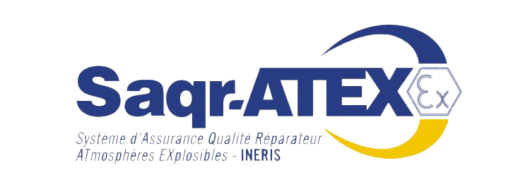
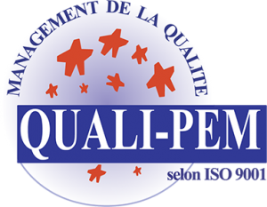
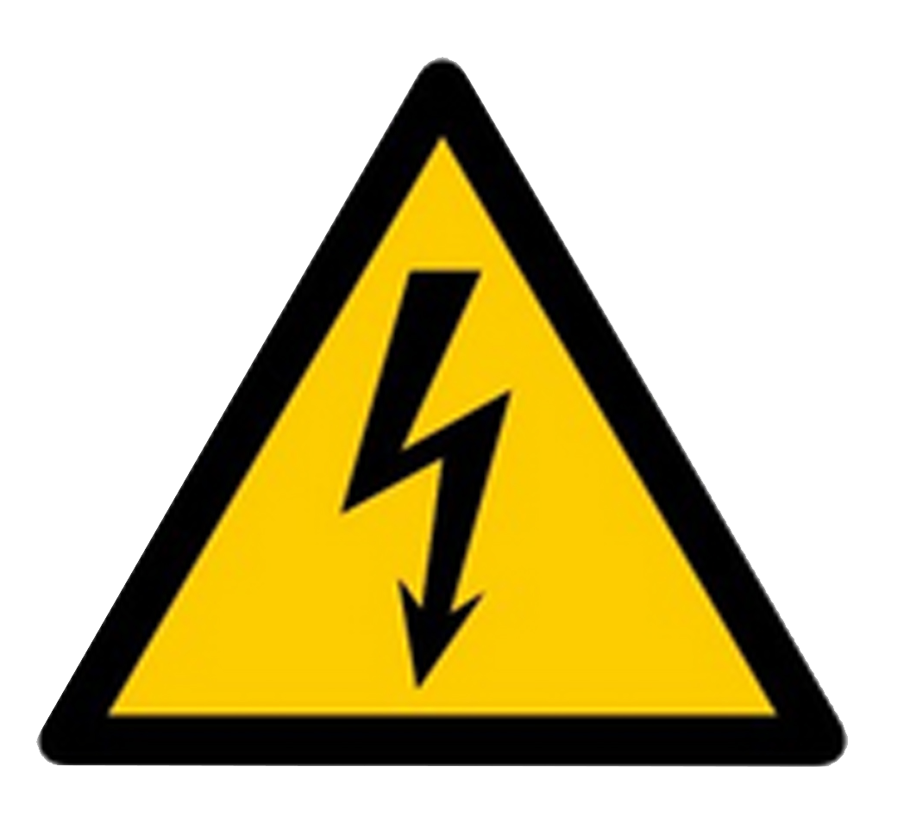

La qualité, un état d'esprit.
Nous nous inscrivons dans un processus d’amélioration continu qui vise à une gestion rigoureuse des méthodes et process dans le but d’optimiser la qualité de nos prestations.Notre service qualité, veille au respect des exigences des clients et à la satisfaction de leurs demandes avec notamment un système de reporting basé sur des indicateurs d’efficience.
Notre politique de gestion qualité nous permet aujourd’hui de gérer de manière efficace, les projets les plus complexes.
En cours de Certification Saqr-ATEX

L'exploitant d'un site industriel où des atmosphères explosibles peuvent se produire (ATEX), a la responsabilité d'assurer le bon entretien des matériels utilisés en atmosphères explosibles, y compris la réparation de ces matériels. La réparation d'un matériel ATEX doit être considérée très sérieusement car on ne répare pas un matériel ATEX comme un matériel classique.

CERTIFIÉE QUALIP-PEM
QUALIP-PEM est une démarche qualité consistant en la mise en place d'un système qualité ayant pour référence la norme ISO 9001 : 2000, "Système de management de la qualité".
Gonzalez Bobinage est certifié QUALIP-PEM. Cela s'applique à chaque unité de production dans le respect des processus définis.

ENSEMBLE DES HABILITATIONS ELECTRIQUES
Notre équipe est formé et peut intervenir sur l'ensemble des réseaux électriques. Nous avons l'ensemble des
UNE SÉCURITÉ CONTRÔLÉE
Soucieux de la sécurité de ses collaborateurs, Gonzalez Bobinage impose des procédures de travail afin de limiter les risques d’accident.
QUELQUES CHIFFRES
Toute commande de matériel stocké, passée avant 17h, part le jour même.
Délai de traitement des offres : 48h.
Délai de traitement des devis : 72h.